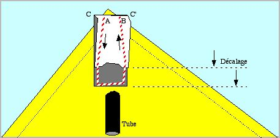
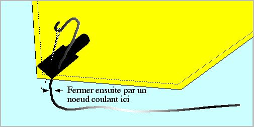
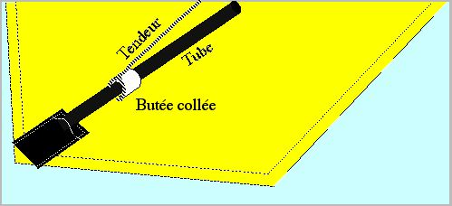

Fourreaux et autres
Quand on fabrique un cerf-volant, on a besoin de tendre la toile avec des fourreaux placés en général dans les coins. Je parle ici non de ceux qui courent tout au long d'un tube mais des fourreaux "borgnes" où le tube vient en butée. La méthode la plus simple est de prendre une bande de dacron assez large pour que le tube rentre dans le fourreau après couture. On la plie en deux en décalant les bords pour permettre la couture et aussi pour rendre l'introduction du tube plus facile. On peut aussi évaser l'échancrure d'entrée dans le même but.
Ensuite coudre en partant de A et en tournant jusqu'à B : on n'a à faire qu'une seule couture, et dans un coin on peut le plus souvent tourner le bout de toile suffisamment pour cela. Un bout de ruban adhésif le long du côté B maintiendra le fourreau en place pour débuter la couture. Il est bon d'arrêter celle-ci à chaque bout en faisant un retour arrière classique.
Il faut le coudre le plus près possible du coin en fonction de la largeur AB nécessaire pour le tube. On pourra ensuite couper les coins C et C' qui dépassent.

S'il s'agit d'un tube à rentrer et sortir fréquemment, on peut prendre le côté supérieur plus large que l'autre et coudre en maintenant le pli (mais ce n'est pas facile). Ainsi la poche va bailler suffisamment pour une introduction aisée.
D'autre part, plutôt que de mettre au tube un embout qui gène l'entrée ou la sortie (et qu'il faut avoir sous la main...) on peut bourrer le fourreau sur quelques mm avec de la ouate, du papier ou n'importe quoi. Ainsi, le tube sans embout ne percera pas le dacron. On peut aussi utiliser ce truc si la toile n'est pas assez tendue après quelques temps ou si on s'est un peu trompé. Le bourrage, tassé par la baguette devient assez rigide pour tenir le coin de la toile.
La réalisation décrite présente l'avantage que rien ne dépasse de la toile. Ceci en général est bon pour l'esthétique, mais évite aussi des accrochages avec les voisins (surtout lors des combats de Rokkakus...), les arbres, etc.
Attacher des brides
Deux cas se présentent :
1) la bride ou le tendeur est assez perpendiculaire au tube. Une méthode simple est alors d'utiliser une grosse aiguille et de la piquer 2 fois à travers le dacron du fourreau, pas trop près du bout et en entourant le tube. On referme alors par un noeud et ça tient éternellement.

2) la bride est plutôt parallèle au tube, comme pour un tendeur transverse de Rokkaku. Il ne faut pas alors appliquer la méthode précédente, le dacron se percerait rapidement sous la pression du tube (surtout si vous le frottez par terre !). Il faut au contraire attacher alors la bride au tube, muni d'une butée (bague de durit par exemple, mais un simple petit bout de plastique plat suffit) collée à la cyano.

Je supprime même maintenant la butée, en collant simplement 2 tours de la ficelle nouée autour du tube, le plus près possible du fourreau. C'est très simple à réaliser sans aucune fourniture, et ça tient pendant 12,7 années (je n'ai pas d'expérience plus ancienne...).
Remarque : on peut aussi utiliser celà pour attacher les brides de Rokkaku sur les vergues (renforcer la toile à la traversée avec un carré de Blenderm ou assimilé) et coller le noeud sur la vergue pour qu'il ne se déplace pas, ce qui serait TRES mauvais pour le spi !